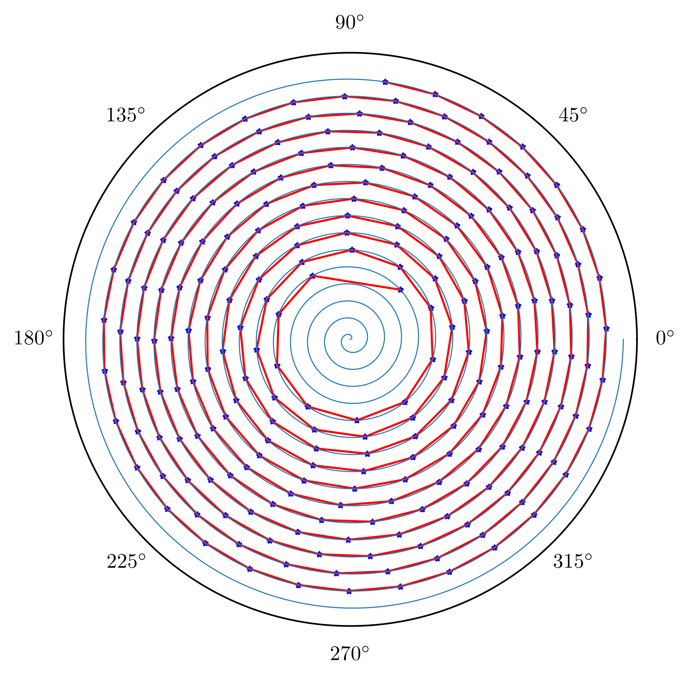

2024CumcmA题
初次尝试
今年参加数模国赛，选了A题，A题原题目是这样的：
“板凳龙”，又称“盘龙”，是浙闽地区的传统地方民俗文化活动。人们将少则几十条， 多则上百条的板凳首尾相连，形成蜿蜒曲折的板凳龙。盘龙时，龙头在前领头，龙身和龙尾 相随盘旋，整体呈圆盘状。一般来说，在舞龙队能够自如地盘入和盘出的前提下，盘龙所需 要的面积越小、行进速度越快，则观赏性越好。
题目是几何分析类型的题，对编程能力要求很高。为了找到每个时刻整条龙的位置和速度，需要分两步求解问题，一是找到每个时刻龙头的位置，二是找到龙身各个节点的位置。这里只需要利用螺身运动的阿基米德螺旋曲线的极坐标方程即可，即：
代码容易实现，略去，得到在413s时整条龙的位置图：

遗憾
求解速度很简单，使用微元法，通过计算在微小时间增量下发生的确定速度。但是在做这道题的时候，写程序求解速度发生了偏差，并且这样的偏差是致命的，得到的速度与正确答案大相径庭。
程序的主要逻辑是没有问题的，问题出在求解设置的与求解位置而设置的角度步长 .因为这里的模拟存在系统误差.
算法的逻辑是根据当前节点的值，按照设置的限制尝试逐步增大下一个搜索的节点值，如果所搜索的节点满足距离条件，那么就找到了目标节点，并从当前节点开始，继续搜索下一个节点…
计算机在模拟时，是严格遵循初始设置的进行角度的增加，但是这样的话，角度值就是离散的一串值，做不到在数学意义上的连续，那么必定会有节点超出距离限制一点点，单个节点这点误差自然可以忽略不计，但是当有很多个节点时，最后的一个节点必定会积累之前所产生的全部误差。
当然，由于本题的节点比较少，位置的模拟是正确的，问题出在速度的模拟上，求解速度的部分代码：
1 | |
当角度步长比较大时，空间的网格就会比较粗糙。这里就产生了一个反常的现象，用于模拟速度的并不是越小越好，当
即微小位移小于空间网格时，所得到的速度就会有较大的偏差。
参赛体验
还有很多的遗憾暂且不表。但这次比赛的体验还是不错的，没有过分熬夜，讨论的氛围良好，总体的完成度还不错。
这道题给我最大的感受是，用的数学知识并不多，往往只需要初高中水平的数学就能够完成模型的搭建。这道题对编程能力的要求比数学高多了，建议将全国大学生数学建模竞赛改成全国大学生编程技能竞赛（误）。
想起高中时总在考完试才知道自己的错漏，当找到了这微小的误差，窗玻璃上溅满了夏末的雨滴。
9.23
刷到一篇关于四川数模阅卷的回答，如果前三问答案都正确，评阅人会认为模型是正确的，有可能被推送至答辩。可惜这个错误使得整篇论文中凡是有关于速度计算的部分都是错的，在前三问中，几乎每一小问都要求计算速度，这就导致阅卷人认为我们的模型有误。至此，国奖是泡汤了。不得不说，一次参赛，是否受益终生不好说，一次教训够我记一阵子了。